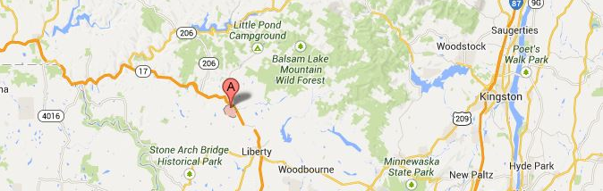

Summary
WHO?
Livingston Manor, a small town on the edge of the Catskill Mountains with just
over 1,233 residents in 2018 serves as a our case study for this project. Livingston Manor's previous newspaper publication
ceased in 2009, a victim of the Great Recession. In 2012, Manor Ink was founded, and is currently run by two adults and five
high school students. Today, news and knowledge about the town is captured and recorded only by this grassroots newsroom.

WHAT?
The origin of the word Palimpsest is used for something reused or altered but
still bearing visible traces of its earlier form. It can be used for material documents as well as larger scale
urban lanscapes. Our project acts as a bridge between the physical and the the digital, lost historical data and community members by
allowing them to share archival pictures on our platform.
WHY?
In order to connect residents together, create relationships within the town community. The
project aims to be accessible to the public and serve a greater purpose, using technology to advance the public interest. Through a digital
platform, the project hopes to create real relationships and redefine archival purposes for a town.
STATEMENT
Our solution, "Palimpsest", introduces a prototype that encourages communities to share their
moments and their local history. The act of sharing memories allows for connections to be drawn between community members and creates a sesnse of
belonging and unity within the neighborhoood.
Their responsibility to capture and preserve community knowledge, prompts our question:
How might we help Livingston Manor record and engage with their shared
history so that communityy members have a greater sense of identity, belonging, and unity?
PROCESS
RESEARCH
Double Diamond Process
NEWS DESERTS
News deserts are communities with limited access to credible and comprehensive news -- are especially prevalent in rural America.
More than 500 of the 1,800 newspapers that have closed or merged since 2004 were in rural communities.
In a report released earlier this year, the Pew Research Center found thatabout half of U.S. adults (47%) say the local news they get mostly covers an area other than where they live.
In a report released earlier this year, the Pew Research Center found thatabout half of U.S. adults (47%) say the local news they get mostly covers an area other than where they live.
LIBRARY X NEWSROOM COLLABORATION
From our interviews with KCQ, NowCastSA, and Local Lives, we realize that both libraries and new organizations play an important role in
providing information to a community. Newsroom often write the first draft of a community's history, while libraries preserve its access.

A recent
Pew Research Center
poll found that most Americans feel that libraries can help them find reliable, trustworthy information.
Libraries and news organizations tend to have a lot in common — they provide information, they’re a vital community resource —
but also because both institutions are in the process of completely reinventing themselves.
Many of the media outlets that remain are under attack for allegedly peddling fake news. It’s a problem that journalists alone cannot fix.
Local libraries are pushing to restore people’s faith in the media.
In some towns, one institution manages both these roles. We collaborated with Manor Ink, a youth-led new organization in Livingston Manor.
Livingston Manor's previous newspapaer publication ceased in 2009, a victim of the Great Recession. In 2012, Manor Ink was founded and is currently
run by two adults and five high school students. Today, news and knowledge about the twon are captured and recorded only by this grassroots newsroom.

Through our interview process, we’ve had the chance to talk to and learn from many newsroom x library collaborations, including the Kansas City Star
about their “What’s your KCQ?” project. In this project, reporters and librarians answer reader questions together.
The aim is to teach community members how to locate and access information using library resources, while also highlighting how reporters uncover
information through public records, interviews and other journalistic methods. It infuses transparency and engagement into an impactful collaboration.
Savannah, who is a journalist at Kansas City Star, said that the Kansas City Star and the Kansas City Public Library have a special collection
together that inspired the KCQ project: the Missouri Valley Special Collections. The special collection has thousands of digitized photographs and material related to the history of Kansas City,
and the community members can interact with them at their convenience.
Our connection with the KCQ has inspired our project and now acts as a precedent for Palimpsest.
Our interviews have led us categorize the archetypes related to our project. We have 9 different types, ranging from community leaders to
commutnity members as well as community oriented to content oriented roles.
PIT QUESTION
Is there an existing bias in the research? Who is being included or excluded?
This PIT question has led us to think about the different populations that have limited or no access to information. Small towns that are
underrepresented on the internet, or touristic towns that are overrepresented create an inequality of presence on the web. This has led us to keep asking ourselves: How do we conduct PIT
research when google's top hits are almost all private interest sponsored results and articles?
SYNTHESIS
Our 9 Archetypes
"And so there was this thought that you could use it in a partnership to engage with the community, and answer something
of their questions using the resources. The paper and the Kansas City Public Library, we have something called the Missouri Valley Special Collections."
PIT QUESTION
What is the larger systemic issue where the problem sits? Are your solutions butting up against
larger societal issues? Have you uncovered any areas of exploration? What more reserach might you need to do to learn more about these areas?>
Much of our solutions seem to be supported by funding. Amount of funding and budget allocation available is variable between large newspapers and smaller
news outlets. Building that trust is another crucial factor which varies, but still exists nevertheless as a relevant problem no matter what the size of the newspaper. We'd like to do more reserach about
the community engagement and interest (ie. how the community reacts to various newspaper initiatives and library programs)
PROTOTYPING
SPATIALIZING NEWS: GEOLOCATED INFORMATION
PIT QUESTION
Have you identified the questions and risks most relevant to this population?
- Lack of knowledge of using QR codes therefore lack of popularity in the town
- Need for an intermediary person to run the website (librarian or photography club...)
- Where do we draw the line between opinion-based social network and a news article?
What risks might not be encompassed by your prototype?
If we are user testing on Livingston, we won't be able to directly apply our prototype to the community members; we will have to do it
through a third party. We will not know what type of population is scanning the QR codes (younger/older)
TESTING
QR CODE TESTING